Rodinné kamenictví · Jesenicko
Pomníky, které vydrží generace
Více než 30 let tesáme, brousíme a osazujeme kámen. Pomníky, kuchyňské desky, krby, schody a dlažby.
- 30+
- let rodinné tradice
- 80+
- druhů žul a mramorů
- Po-Ne
- 8:00-20:00
- Mikulovice
- celá severní Morava
Naše služby
Od pomníků po kuchyňské desky. Každou zakázku zaměříme, vyrobíme a namontujeme.
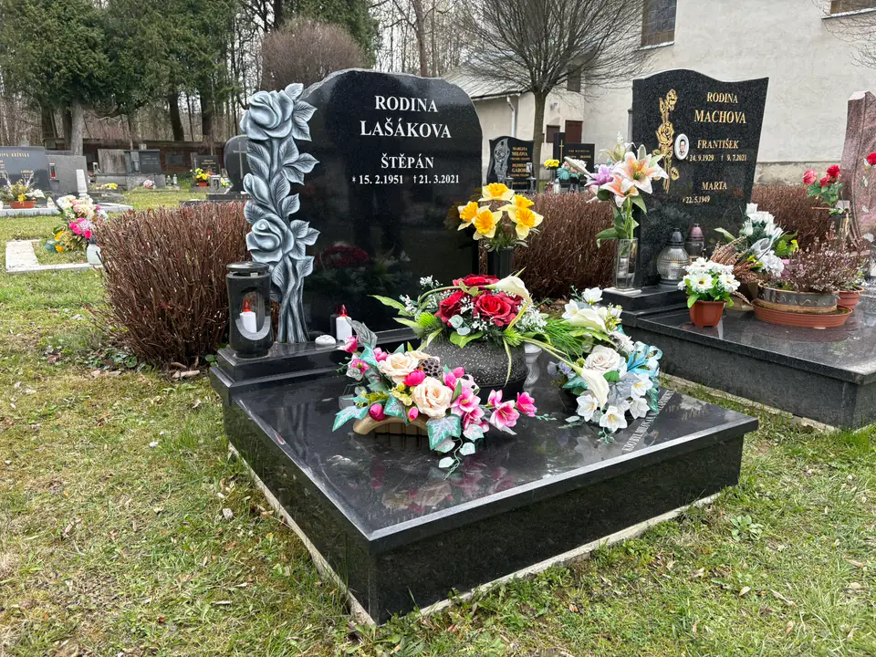
Pomníky a náhrobky
Výroba a montáž pomníků z široké škály přírodních kamenů. Individuální návrhy dle přání zákazníka.
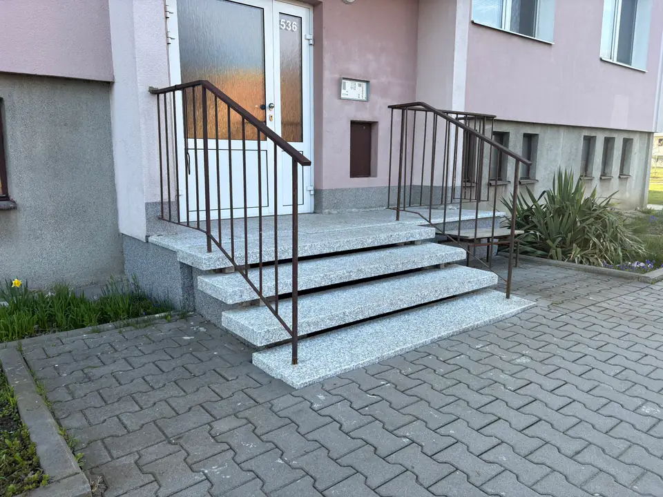
Schody a dlažby
Kamenné schody, obklady a dlažby pro interiér i exteriér. Zaměření a montáž v ceně.
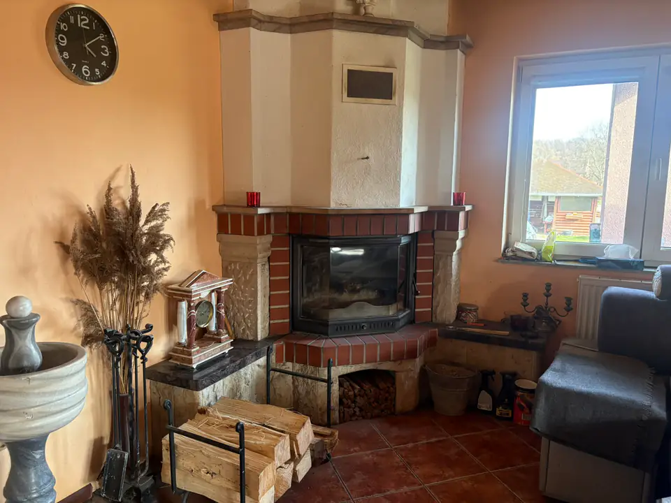
Kuchyně a krby
Kuchyňské desky, krby a sloupy z žuly a mramoru. Odolné a elegantní řešení.
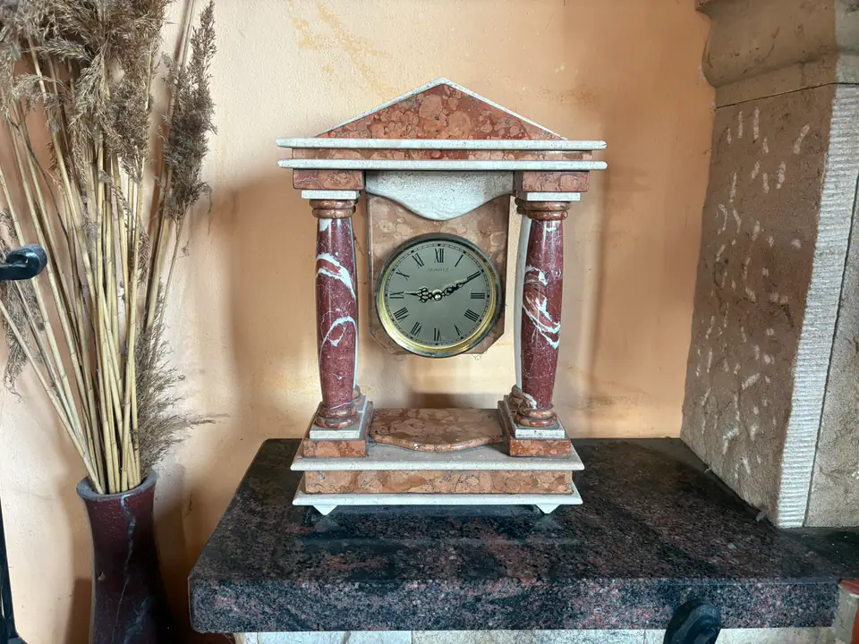
Bytové doplňky
Sloupkové hodiny, psací soupravy, těžítka, popelníky a vázy z přírodního kamene.
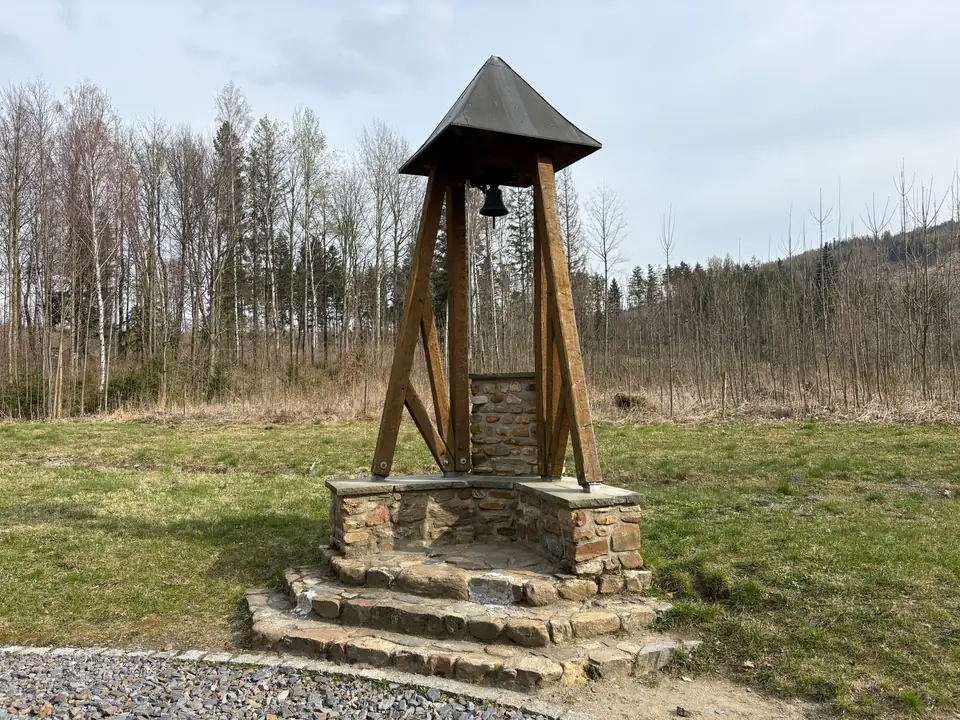
Ostatní
Další kamenické práce a zakázky na míru dle individuálních požadavků.
Vybrané realizace
Každá zakázka je originál. Malý průřez tím, co jsme vyrobili a osadili.
Jak to probíhá
-
Konzultace
Zavoláte nebo napíšete. Poradíme s materiálem a připravíme nezávaznou cenovou nabídku.
-
Výběr kamene
Vyberete si z více než 80 druhů žul a mramorů z tuzemska i zahraničí.
-
Zaměření a výroba
Zakázku zdarma zaměříme a vyrobíme na míru, u pomníků včetně nápisu.
-
Montáž
Hotové dílo dovezeme a namontujeme kdekoliv na severní Moravě.
Řemeslo, které je v rodině už celou generaci
Jsme rodinná firma s více než 30letou tradicí v oboru kamenických a stavebnických služeb. Sídlíme v Mikulovicích a pracujeme na Jesenicku, v Krnově a po celé severní Moravě.
Díky dlouholetým zkušenostem a individuálnímu přístupu ke každé zakázce garantujeme kvalitu, na kterou se můžete spolehnout. Ceny jsou férové, bez zbytečných přirážek a prostředníků.
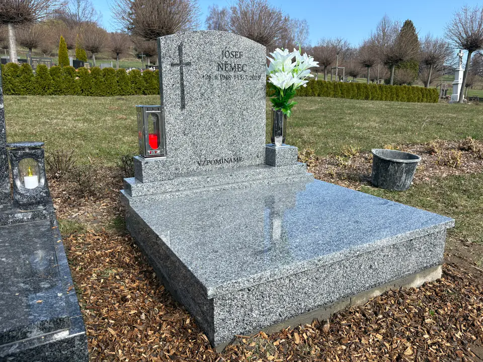
Vzorky kamene
Nabízíme více než 80 druhů žul a mramorů z celého světa. Tady je malý výběr.
Najeďte na vzorek a prohlédněte si strukturu kamene zblízka.
-
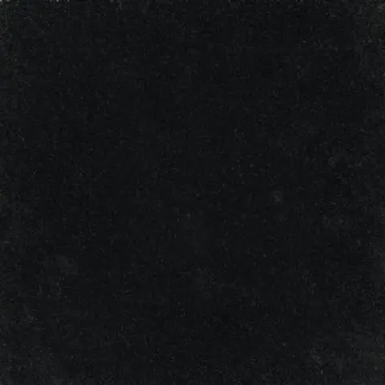
Zimbabwe Black -
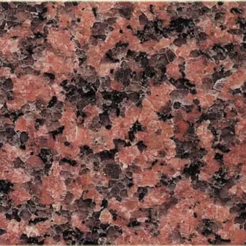
Balmoral Red -
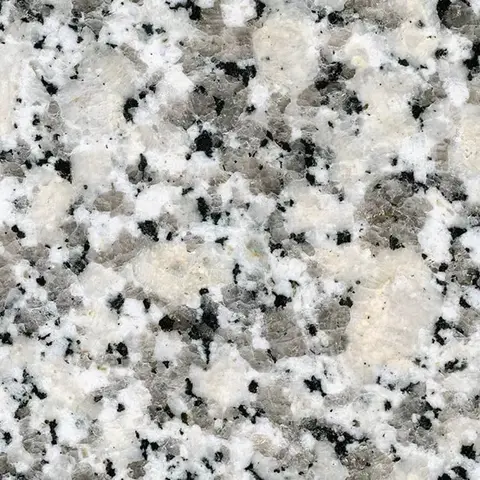
Bianco Sardo -
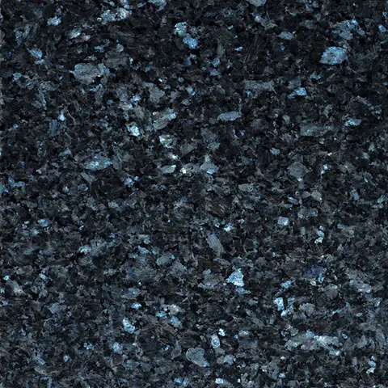
Blue Pearl -
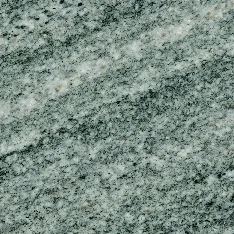
Verde Marina -
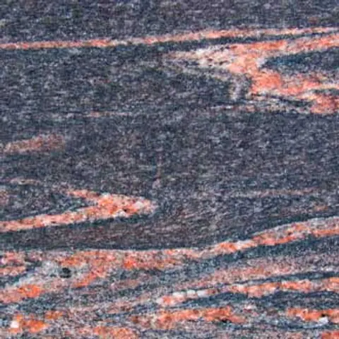
Himalayan Blue -
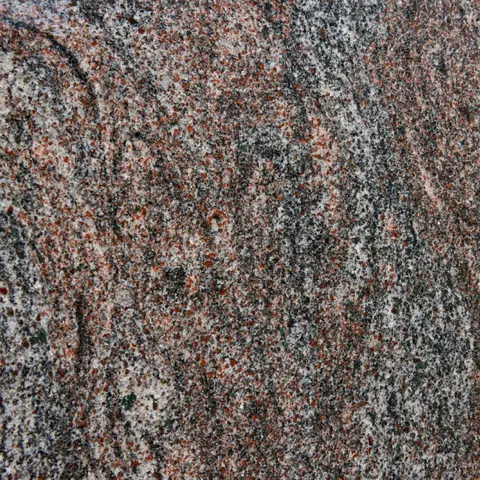
Paradiso Classico -
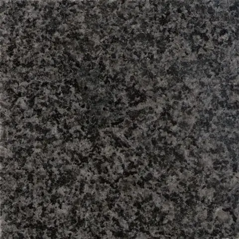
Nero Impala -
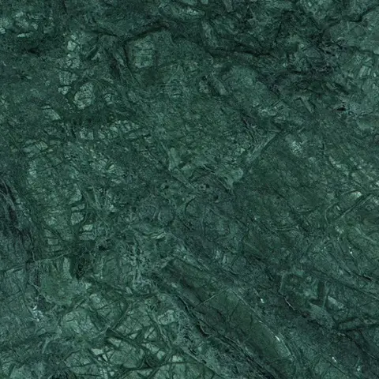
Verde Guatemala -
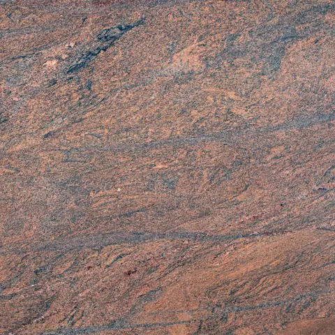
Multicolour Red -
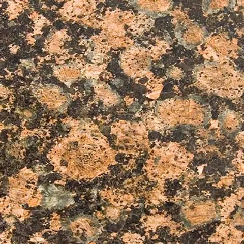
Baltic Brown -
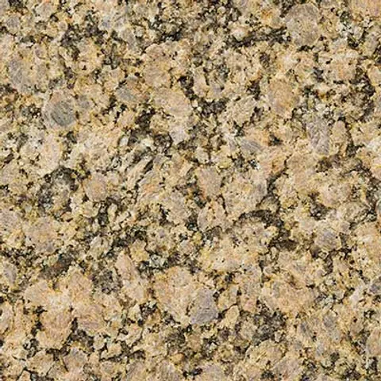
Giallo Veneziano
Kde působíme
Sídlíme v Mikulovicích a pravidelně pracujeme po celé severní Moravě.
- Mikulovice (sídlo)
- Jeseník
- Krnov
- Bruntál
- Šumperk
- Olomouc
- Opava
- Moravský Beroun
- Ostrava
Máte zájem o naše služby?
Rádi vám poradíme s výběrem materiálu a zpracujeme nezávaznou cenovou nabídku.
- Adresa
- Sokolská 595, 790 84 Mikulovice
- info@kamenictvi-adamek.cz
- Provozní doba
- Po-Ne 8:00-20:00